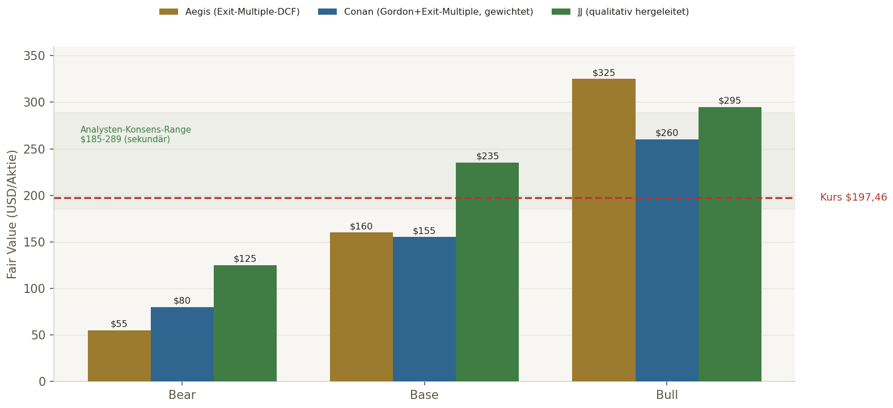
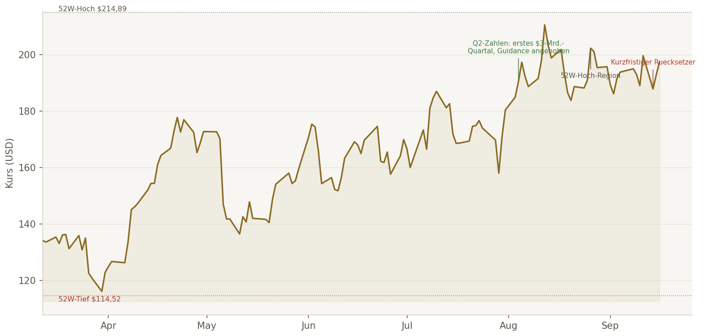
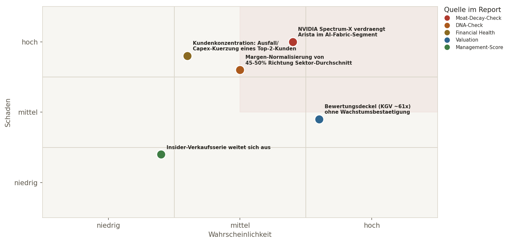

Das operative Geschäft. Arista Networks überholte Cisco 2024 als größter Anbieter von Data-Center-Ethernet-Switches. Q2 2026: erstes $3-Mrd.-Quartal, Umsatz +37,7% YoY, FY26-Guidance zum dritten Mal auf $12,6 Mrd. (+40%) angehoben. Praktisch schuldenfrei, ~$13,3 Mrd. Cash, Op.-Margen 45-50%. Beide unabhängigen KI-Analysen kommen auf einen nahezu makellosen DNA-Check.
Der Knackpunkt. NVIDIA ist mit seiner Spectrum-X-Plattform in kurzer Zeit zu einem echten Top-2-Wettbewerber im Data-Center-Ethernet-Switching aufgestiegen — zeitweise sogar mit Marktführerschaft in diesem Teilsegment, je nach Quelle/Quartal. NVIDIA ist damit gleichzeitig Nachfragetreiber für Arista (GPU-Cluster brauchen Netzwerke) UND direkter Konkurrent — eine ungewöhnliche Doppelrolle.
Der Bewertungsbefund. Alle drei unabhängigen DCF-Ansätze zeigen denselben methodischen Effekt: ein reiner Gordon-Growth-Ansatz unterschätzt einen Wachstumswert wie Arista strukturell (Base-Case nur ~$96-105) — erst die Exit-Multiple-Methode hebt die Modelle auf $155-260 Base, je nach Optimismus der Wachstums-/Margenannahmen.
Der Cross-Check-Befund. JJ kommt auf KAUFEN (Score 9/10), Conan auf BEOBACHTEN (Score 7,4/10) — ein echter, primärquellenbelegter Dissens zwischen den beiden unabhängigen Perspektiven, keine Datenqualitäts-Störung. Details Seite 2.
BEOBACHTEN
Score 8/10, Konfidenz 🟡 · näher an Conan
KAUFEN
Score 9/10, Konfidenz Hoch · Tier 1
BEOBACHTEN
Score 7,4/10, Konfidenz 72% · Tier 2
Arista Networks ist fundamental einer der saubersten Compounder, die in dieser Analyse-Reihe untersucht wurden: praktisch schuldenfrei, Rekordmargen, disziplinierte Kapitalallokation, ein echter Software-Moat (EOS). Aber: NVIDIA ist im selben Data-Center-Ethernet-Switching-Segment in kurzer Zeit zu einem echten, primärquellenbelegten Top-2-Wettbewerber aufgestiegen — mit der ungewöhnlichen Doppelrolle als gleichzeitiger Nachfragetreiber und Konkurrent. Die Bewertung (KGV ~61x) lässt wenig Raum für Enttäuschungen. Ob das aktuelle Niveau ein Kauf oder nur ein Beobachtungsfall ist, hängt fast vollständig davon ab, wie stark man dieses eine Risiko gewichtet — genau hier liegt die dokumentierte Divergenz zwischen den unabhängigen Analysen.
Praktisch schuldenfrei, ROIC/FCF-Marge weit über Schwellen, Rekord-Op.-Margen 45-50%, Moat durch EOS-Software-Einheitlichkeit, Guidance dreimal in Folge angehoben.
NVIDIA Spectrum-X real und primärquellenbelegt als Top-2-Wettbewerber im selben Segment, Kundenkonzentration 42% bei zwei Hyperscalern, KGV ~61x, überwiegend Insider-Verkäufe.
Q3-2026-Earnings (~03.11.), jede neue IDC/Dell'Oro-Marktanteilsdaten-Veröffentlichung, Entwicklung des Ultra Ethernet Consortium, Kundenkonzentration.
BEOBACHTEN. Die fundamentale Qualität ist unbestritten, aber der echte JJ/Conan-Dissens über das NVIDIA-Risiko rechtfertigt Zurückhaltung statt hoher Konviktion in eine Richtung.
| Kriterium | Conan | JJ | Status |
|---|---|---|---|
| ROIC >20% | ✅ deutlich (NOPAT-basiert) | ✅ 76,5% (2025), 49,9% annualisiert Q2 2026 | ✅ Konvergent |
| FCF-Marge ≥20% (real) | ✅ ~42-43% | ✅ ~47-49% | ✅ Konvergent |
| Operativer Leverage | ✅ | ✅ | ✅ Konvergent |
| Piotroski F-Score ≥7 | 🟡 ~7-8/9 geschätzt, nicht voll auditierbar | [N/V] nicht gefunden | 🟡 Datenlücke, kein Substanzproblem |
| EPS-CAGR 5J ≥12% | 🟡 2J-Beleg ~29%, 5J formal [N/V] | ✅ 39,9% (Quellen uneinheitlich) | ✅ Klar über Schwelle |
| Bruttomarge ≥60% | ✅ 62,9-64,1% | ✅ 62-64,6% | ✅ Konvergent |
| Op.Margin ≥20% | ✅ 45,4-49,9% | ✅ 45,4-49,9% | ✅ Konvergent |
| Revenue-CAGR ≥8-10% | ✅ +37,7% Q2 2026 | ✅ 32-33,8% 5J | ✅ Konvergent |
| Net Debt/EBITDA <2,0x | ✅ Netto-Cash | ✅ Netto-Cash | ✅ Konvergent |
| Capex/Umsatz ≤5% | ✅ ~1,3-1,5% | ✅ ~1,4% | ✅ Konvergent |
| SBC-Infection-Check | ✅ ~4,2-4,9% Umsatz | ✅ ~3,96% Umsatz | ✅ Konvergent |
DNA-Urteil: K-Basis praktisch vollständig erfüllt, E-Basis 6/6 klar erfüllt. Beide unabhängigen KIs konvergieren auf ein außergewöhnlich starkes Bild. Kundenkonzentration (Pflicht-Check): Microsoft+Meta = ~42% Umsatz 2025 (26%/16%), "Cloud Titans" gesamt ~48% — größtes nicht-technologisches Einzelrisiko, primärquellenbelegt.
JJ: NVIDIA erreichte in Q1 2026 21,5% Marktanteil im Data-Center-Ethernet-Switching (vs. Aristas 20,7%) — NVIDIA damit knapp vor Arista. Conan: IDC-Daten für 2Q26 zeigen NVIDIA $2,5 Mrd./+181,1%/20,4% Anteil vs. Arista $2,5 Mrd./+37,6%/18,7% Anteil (nahezu gleich); Dell'Oro für AI-Back-End-Networks 2Q26: Celestica #1, NVIDIA knapp dahinter, Arista #3 (rückt näher an die Spitze, wenn Deferred Revenue mitgerechnet wird). Konvergenz trotz unterschiedlicher Einzelzahlen: beide unabhängigen Recherchen bestätigen dasselbe qualitative Bild — NVIDIA ist im AI-Ethernet-Switching-Segment ein echter Top-2-Wettbewerber, zeitweise sogar knapp vor Arista. Die ungewöhnliche Doppelrolle (NVIDIA als Nachfragetreiber UND Konkurrent) ist von beiden als zentrales strukturelles Risiko benannt. Moat-Score: 3-4/4 (Conan 3,0, JJ 4,0), beide mit "leicht abnehmender" Tendenz. Gegenkräfte: EOS-Software-Einheitlichkeit, Ultra Ethernet Consortium als offener Standard, Führungsposition bei 400G/800G/1,6T.
| Key Success Factor (KI-Rechenzentrums-Netzwerktechnik) | ANET-Positionierung | Status |
|---|---|---|
| Software-Einheitlichkeit über Hardware-Generationen | EOS läuft konsistent von Campus- bis 1,6T-AI-Plattformen — zentraler Kundenbindungs-Faktor | ✅ DEFENSIV |
| Integration mit führenden GPU-/Compute-Plattformen | 7800er-Serie kompatibel mit NVIDIA/Broadcom-ASICs, tiefe Hyperscaler-Einbindung | ✅ DEFENSIV |
| Ethernet- vs. proprietäre-Fabric-Entscheidung der Hyperscaler | Arista positioniert sich über das Ultra Ethernet Consortium als offene Alternative zu NVIDIAs vertikaler Integration | ✅ DEFENSIV |
| Lieferketten-/Fertigungskapazität bei Hochleistungs-Silizium | Mehrjährige Kaufzusagen auf $9,7 Mrd. nahezu verdreifacht zur Absicherung | ✅ DEFENSIV |
| Kundenkonzentration bei wenigen Hyperscalern | Microsoft+Meta ~42% Umsatz 2025 — reales, primärquellenbelegtes Risiko | 🟡 IN ARBEIT |
| Latenz/Durchsatz für AI-Workloads | 800G im Einsatz, 1,6T-Plattformen inkl. flüssigkeitsgekühlter Optionen in der Pipeline | ✅ DEFENSIV |
Positiv: ROIC-Trend stark positiv, hohe Reinvestitionsrendite, disziplinierte, konsistente Aktienrückkäufe, gezielte "Tuck-in"-Akquisitionen (VeloCloud, Mojo Networks u.a.) statt riskanter Großübernahmen, FY26-Guidance dreimal in Folge angehoben. CEO Jayshree Ullal wird von beiden KIs als transparent zur NVIDIA-Konkurrenzsituation eingeordnet ("Ethernet als eventueller Gewinner und Gleichmacher"), kein erkennbarer Dodge-Factor.
Abzug: überwiegend Insider-Verkäufe in den letzten 90 Tagen (u.a. CEO Ullal, Co-Founder Andreas Bechtolsheim, Director Mark Templeton) — teils Nicht-Markt-Transaktionen (GRAT-Übertragungen) oder 10b5-1-Planverkäufe, kein klares Alarmsignal, aber auch kein positives Kaufsignal.
| Bein | Beta | WACC | Bear-FV | Base-FV | Bull-FV |
|---|---|---|---|---|---|
| Aegis | 1,60 | 12,10% | $55 | $160 | $325 |
| Conan | 1,62 | ~9,8% | $80 | $155 | $260 |
| JJ | 1,65 | 14,08% | $100-150 | $210-260 | $270-320+ |
Wichtiger methodischer Fund: Ein reiner Gordon-Growth-Ansatz (Aegis' erster Durchlauf, sowie Conans eigene Gordon-Teilrechnung) ergab für ANET nur ~$96-105 Base — praktisch identisch zwischen beiden unabhängig gerechneten Modellen. Erst die Exit-Multiple-Methode (Peer-Multiple auf terminalen FCF) hebt beide Modelle auf $155-160 Base. Das ist derselbe strukturelle Effekt, der bereits bei anderen Hochwachstums-Analysen dieser Woche auftrat: reine Perpetuity-Modelle unterschätzen wachstumsstarke Compounder systematisch.
Die eigentliche Divergenz liegt nicht in der Methode, sondern in den Grundannahmen: JJ verwendet einen höheren WACC (konservativeres Beta-Setup), aber gleichzeitig deutlich optimistischere Wachstums-/Margen-Annahmen über den gesamten Horizont. Conan und Aegis gewichten das NVIDIA-Risiko stärker im mittelfristigen Wachstumspfad, nicht nur im Bear-Case-Tail.
Laut sekundärer Recherche (nicht über Twelve Data verifizierbar) liegt der Analysten-Konsens bei ca. $241,82 (Range $185-289, "Strong Buy", mehrere jüngste Kurszielerhöhungen auf $250-280) — über allen drei Base-Cases außer JJs oberem Bereich, aber innerhalb der Bull-Ranges aller drei Beine. Aegis-Einordnung: Der Konsens preist implizit voraus, dass Arista das NVIDIA-Risiko über den gesamten Prognosehorizont weitgehend abfedert — eine Annahme, die näher an JJs optimistischerer Lesart liegt als an Conans/Aegis' vorsichtigerer.

Einordnung: Der aktuelle Kurs ($197,46) liegt zwischen allen drei Base-Cases — über Conans und Aegis' Base ($155-160), aber innerhalb bzw. unter JJs Base-Range ($210-260). Das bestätigt visuell den Kern-Befund: der Markt preist aktuell eine Lesart ein, die näher an der optimistischen (JJ) als an der vorsichtigen (Conan/Aegis) Einschätzung liegt. Keines der drei Modelle hält den aktuellen Kurs für ein klares Schnäppchen, aber auch keines hält ihn für absurd überteuert.

| Kurs vs. SMA20/50/200 | $197,46 über allen drei | Bullisch geordnet |
| 52W-Trend | -8,1% vom Hoch, +72,4% über Tief | Starker langfristiger Aufwärtstrend |
| RSI(14) | 54,6 | Neutral |
| MACD | 1,81, Signal 2,23, Hist. -0,42 | Leicht abschwächendes Momentum nach starkem Lauf |
| Bollinger | Kurs im oberen Bandbereich | Bullisch, keine Extremzone |
| ATR(14) / ATR% | $8,22 / ~4,2% | Moderat |
Mittelfristig BULLISH, kurzfristig konsolidierend
Beide KIs kommen unabhängig zum selben technischen Grundbild — Kurs klar über allen relevanten gleitenden Durchschnitten, kein Trendwechsel-Signal, nur ein früher Hinweis auf nachlassendes kurzfristiges Momentum.
Die Technik stützt weder eindeutig JJs noch Conans Lesart — sie bestätigt lediglich, dass kein akuter technischer Bruch vorliegt. Die Entscheidung bleibt fundamental, nicht technisch getrieben.
| Termin | Was beobachten | Positives Signal | Warnsignal |
|---|---|---|---|
| ~03.11.2026 | Q3-2026-Earnings | Weiterhin starkes Wachstum + gehaltene/steigende Margen, Guidance erneut angehoben | Margen-Kompression oder erste Guidance-Kürzung |
| Laufend | IDC/Dell'Oro-Marktanteilsdaten | Arista behauptet oder gewinnt Anteil im Data-Center-Ethernet-Switching | NVIDIA baut Marktführerschaft im Segment weiter aus |
| Laufend | Ultra Ethernet Consortium | UEC etabliert sich als glaubwürdiger, breit akzeptierter offener Standard | Hyperscaler wählen zunehmend NVIDIAs vertikal integrierten Stack |
| Laufend | Kundenkonzentration | Diversifizierung über einen dritten/vierten Hyperscaler | Ein Top-2-Kunde kürzt Bestellungen/Capex spürbar |
| Datum | Event | Relevanz |
|---|---|---|
| ~03.11.2026 | Q3-2026-Earnings, Konsens-EPS $1,06-1,08 | Nächster harter Datenpunkt für Wachstum/Margen im Licht des NVIDIA-Wettbewerbs |
| Laufend | 1,6T-AI-Fabric-Plattformen, flüssigkeitsgekühlte Optionen | Technologische Antwort auf steigende AI-Cluster-Anforderungen |
NVIDIA-Doppelrolle: gleichzeitig wichtiger Nachfragetreiber (GPU-Cluster brauchen Netzwerke) und direkter Konkurrent über Spectrum-X — komplexe, in dieser Form ungewöhnliche Struktur. Ethernet vs. InfiniBand: InfiniBand hat bei Ultra-Low-Latency für bestimmte Scale-up-GPU-Cluster noch Vorteile, Arista setzt auf offene Ethernet-Standards für Scale-out/Scale-across. Kundenkonzentration: Microsoft+Meta ~42% Umsatz 2025. Lieferketten-/Zoll-Risiko: $9,7 Mrd. mehrjährige Kaufzusagen zur Absicherung, aber weiterhin abhängig von Hochleistungs-Silizium/Speicher-Verfügbarkeit.
| Person | Transaktion | Einordnung |
|---|---|---|
| Jayshree Ullal (CEO) | Verkauf ~573,5 Tsd. Aktien / $119,4 Mio. (14.08.2026) | 🟡 Größere Position, teils 10b5-1 |
| Andreas Bechtolsheim (Co-Founder) | Verkauf 300 Tsd. Aktien / $60,8 Mio. (31.08.2026) | 🟡 Größere Position |
| Kenneth Duda (Präsident/CTO) | 200.000 Aktien in GRATs übertragen (08.09.2026) | Keine Markttransaktion (Vermögensstrukturierung) |
| Mark Templeton (Director) | Verkaufsabsicht 20.000 Aktien / ca. $3,9 Mio. (08.09.2026) | 🟡 Routine |
Einordnung: überwiegend Verkäufe, insgesamt ~$850 Mio. in 90 Tagen laut einer Quelle — kein klares Alarmsignal (hohe Führungs-/Gründerbeteiligung bleibt bestehen, viele Transaktionen planbasiert), aber auch kein positives Kaufsignal.

| Risiko | Herkunft im Report | Frühindikator |
|---|---|---|
| NVIDIA Spectrum-X verdrängt Arista im AI-Fabric-Segment | Moat-Decay-Check (S.3) | Neue IDC/Dell'Oro-Marktanteilsdaten zeigen fortgesetzten Trend |
| Margen-Normalisierung von 45-50% Richtung Sektor-Durchschnitt | DNA-Check (S.3) | 2 aufeinanderfolgende Quartale mit rückläufiger Op.-Marge |
| Kundenkonzentration: Ausfall/Capex-Kürzung eines Top-2-Kunden | Financial Health (S.3) | Guidance-Kürzung mit explizitem Kundenbezug |
| Bewertungsdeckel (KGV ~61x) ohne Wachstumsbestätigung | Valuation (S.5-6) | Wachstumsverlangsamung ohne kompensierende Margenexpansion |
| Insider-Verkaufsserie weitet sich aus | Management-Score (S.4) | Weitere große Form-4-Verkäufe ohne Gegenkäufe |
Einordnung: Der obere rechte Quadrant enthält mit dem NVIDIA-Moat-Decay-Risiko genau den Punkt, der auch die zentrale JJ/Conan-Divergenz trägt — kein isoliertes Einzelrisiko, sondern der entscheidende, wiederkehrende Faktor dieser gesamten Analyse.
Nach drei aufeinanderfolgenden Ausfällen der OpenAI-Bridge (Conan) im Verlauf desselben Tages (bedingt durch aufgebrauchte API-Credits, nicht durch einen technischen Fehler) konnte diese Analyse nach Aufladung der Credits wieder als vollständiger 3-fach-Check laufen. Beide Diagnose-Tests (triviale Anfrage, echte Live-Suche) bestätigten die Wiederherstellung vor Dispatch.
Beide KIs zitieren durchgängig Primärquellen (SEC-Filings, offizielle Pressemitteilungen, IDC/Dell'Oro-Marktdaten) und kommen bei praktisch allen Fakten (DNA-Kennzahlen, Bilanz, Kundenkonzentration, KSF-Faktoren) zu nahezu identischen Werten. Der Dissens entsteht ausschließlich bei der GEWICHTUNG eines einzigen, aber zentralen Risikofaktors (NVIDIA-Wettbewerb) für die mehrjährige Wachstums-/Margenprognose — eine legitime, gut begründete Meinungsverschiedenheit zwischen zwei unabhängigen Analyseansätzen, kein Rechercheversagen einer Seite.
Arista Networks ist fundamental einer der saubersten Compounder dieser Analyse-Reihe — praktisch schuldenfrei, Rekordmargen, echter Software-Moat, disziplinierte Kapitalallokation. Die eigentliche Anlageentscheidung hängt aber fast vollständig davon ab, wie stark man das primärquellenbelegte NVIDIA-Spectrum-X-Risiko gewichtet — und hier bleibt selbst die zugrunde liegende Marktdatenlage (unterschiedliche Marktanteilszahlen je Quelle/Quartal) volatil. Aegis' Synthese: BEOBACHTEN, näher an der vorsichtigeren Einschätzung — nicht weil die These schlecht wäre, sondern weil eine hohe Konviktion in eine Richtung angesichts des echten, gut belegten Dissenses zwischen den unabhängigen Analysen verfrüht wäre.
8/10
Mittelwert der drei Beine (7,4-9), leicht nach unten gewichtet wegen Bewertungsspanne und volatiler NVIDIA-Marktanteilsdaten.
🟡 MITTEL
Nicht wegen unvollständiger Recherche, sondern wegen des echten, gut belegten Dissenses zwischen den unabhängigen Perspektiven.
| Schritt | Ergebnis |
|---|---|
| Anker-Bereich | 6-8 QUALITÄTS-KERN bis grenzwertig 9-10 — DNA praktisch makellos, aber Moat-Decay-Risiko real und primärquellenbelegt |
| Ausgangswert im Bereich | 8 (oberes Ende von 6-8) — Fundamentaldaten rechtfertigen mehr als die Mitte, NVIDIA-Risiko verhindert den 9-10-Bereich |
| Aktive Mali | Bewertungsdeckel (KGV ~61x), Kundenkonzentration 42%, überwiegend Insider-Verkäufe — als korrelierte Gruppe (alle senken die Sicherheitsmarge) behandelt |
| Aktive Deckel | Konfidenz-Deckel 🟡 wegen des echten JJ/Conan-Dissenses und der volatilen NVIDIA-Marktanteils-Datenlage |
| Finaler Agent Score | 8/10 — Herleitung bestätigt den Mittelwert der drei unabhängigen Beine |